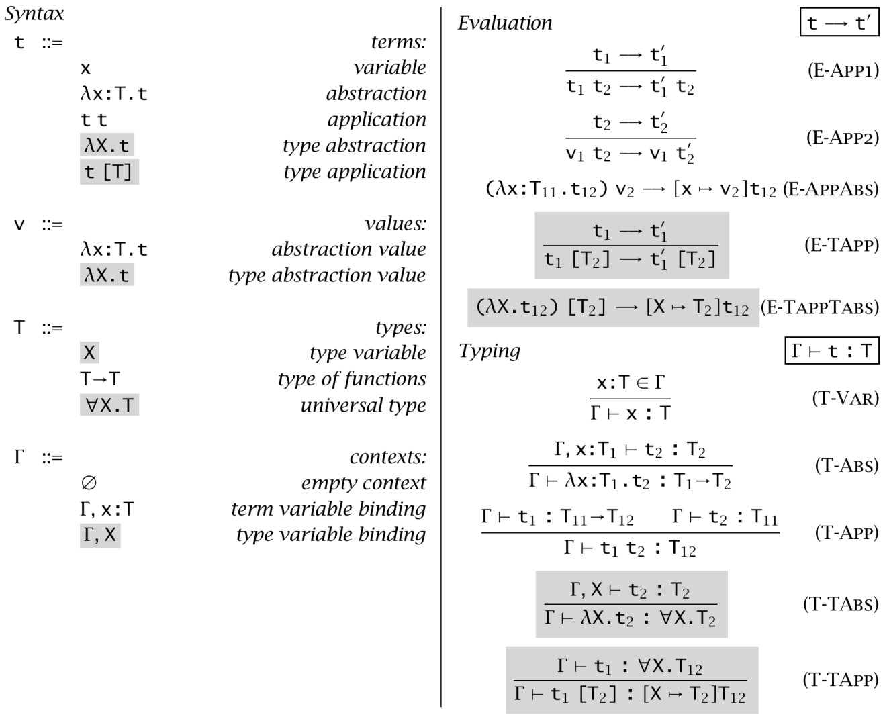
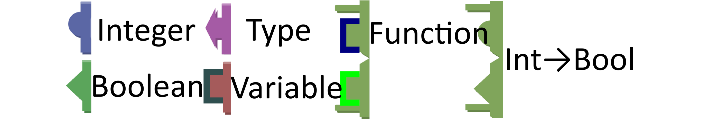
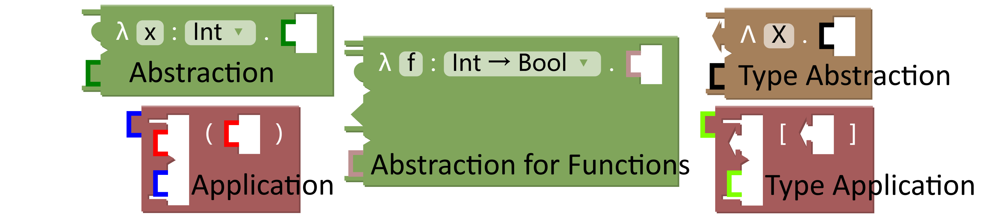

Typed Lambda Calculus in Blockly
Typed lambda calculus is a formal system in mathematical logic and computer science that extends the untyped lambda calculus by assigning types to terms. It provides a framework for expressing computations through function abstraction and application, ensuring that operations are performed on terms of appropriate types. This type system enhances reliability and serves as a foundation for functional programming languages like Haskell.
The building blocks of typed lambda calculus are called terms, which can be one of three forms:
- Variables: Symbols such as
x, y, or z that represent values or placeholders.
- Abstractions: Expressions written as
λx.t, where x is a variable and t is a term. This denotes a function that takes x as input and returns t. For example, λx.x is the identity function, which outputs its input unchanged.
- Applications: Expressions of the form
t s, where t and s are terms. This represents applying the function t to the argument s. For instance, (λx.x) y applies the identity function to y, yielding y.
Every term has an associated type, which restricts how terms can be combined:
- Base Types: Simple types like
int, bool, or abstract symbols like α and β.
- Function Types: Types written as
A → B, where A is the input type and B is the output type. For example, λx.x has type A → A, meaning it takes an input of type A and returns a value of the same type A.
Below is a syntax table of typed lambda calculus taken from Types and Programming Languages by Benjamin C. Pierce. If you are interested in further concepts and explanations of the system F, please refer to the book.

Below, we will introduce how the above concept is represented in Blockly.


Shown in the left figure above, you can tell the type of each block by its edge, each native type is defined in various shapesand variable type is defined as coloured square edges.
See in the right figure above, as according to this representation pattern, abstraction and their variants all process a function type.
And under this pattern, the type of its output should be the defined output type of the function that will be going through the application, this is shown by the two blue coloured edges in the application block above.
Examples in Blockly
Here the λ symbol represents the lambda abstraction: [Int] represents its type is Integer, the dot separates the variable to be substituted from the expression body.
The expression below represents a function that takes an integer and returns the integer plus one, and 2 is the input value.
\[
(\lambda x:[Int].x≠1)(2)
\]
In the Blockly representation, the shape and colours of the blocks represents its type.
Integer type is represented with blue blocks with round protrusion, Boolean type is represented with green blocks with triangular protrusion.
the type of the teal lambda expression block is a function that takes an Integer and returns an Integer written as [Int → Bool],
this translates into one spike between two round protrusion and two outer sidebars on the shape of the block.
By the process of beta reduction, the variable x in the term is substituted with the input value of 2, leaving:
\[
2≠1 \text{ | } true
\]
We can also use type variables to abstract over types. Below we have a similar expression checking the input is not equal to 1,
Here input can be any type, abstracted as A. This is also pronounced in the shape of the lambda block.
\[
(\lambda x:[A].x≠1)(input)
\]
The same idea can be applied on the concept of types. Here we have a similar expression to describe the type of the teal lambda block above,
we notice it has the same structure as above except it uses the upper case lambda to distinguish it is for type abstraction.
\[
(Λ A.A → Bool)[input\_type]
\]
Its evaluation process is the same as above, variable 'A' in the term 'A -> Bool' is to be substituted by the input,
which should be the type of the input variable in the previous out-most green block:
Additionally, we can also abstract over functions in lambda expressions, in another term, function can be taken as an input of another function.
Doing so we can create a lambda function that takes a function and applies it onto 2, in similar term like previous examples.
Notice below the type of the function f is represented by [X], you can change it to any function type with input type being Integer, ie. [Int → Bool].
\[
(\lambda f:[X].f(2))(input)
\]
for example, we can have the following expression:
\[
(\lambda f:[Int → Bool].f(2))(\lambda x:[Int].x≠1)
\]
And this reduces to the first expression above by substituting the function f with the lambda x expression.
\[
(\lambda x:[Int].x≠1)(2)
\]
x
Int
≠
x
Int
1
2
x
A
≠
x
A
1
A
A
Bool
A
A
Bool
Int
f
X
2
f
Int → Bool
2
x
Int
≠
x
Int
1